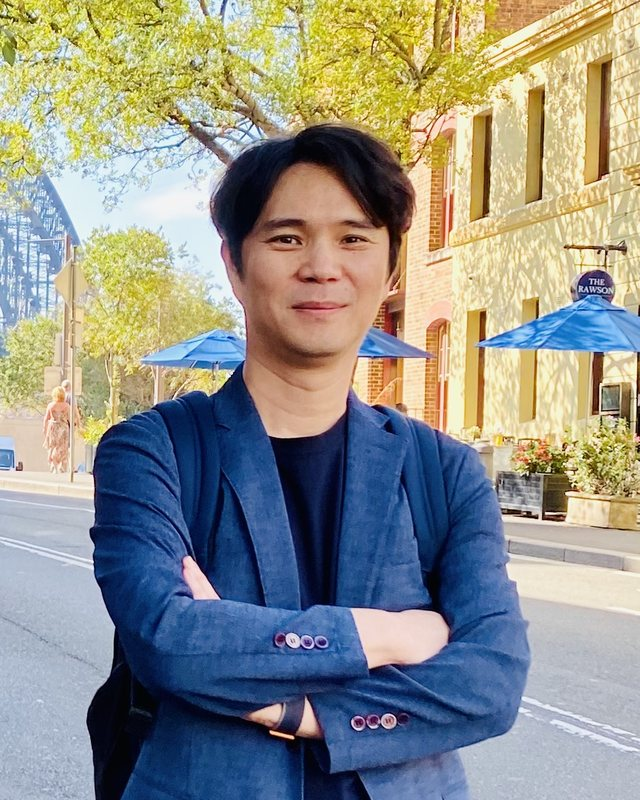
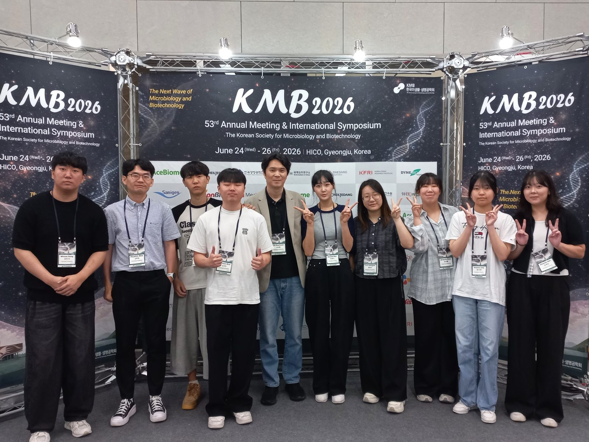
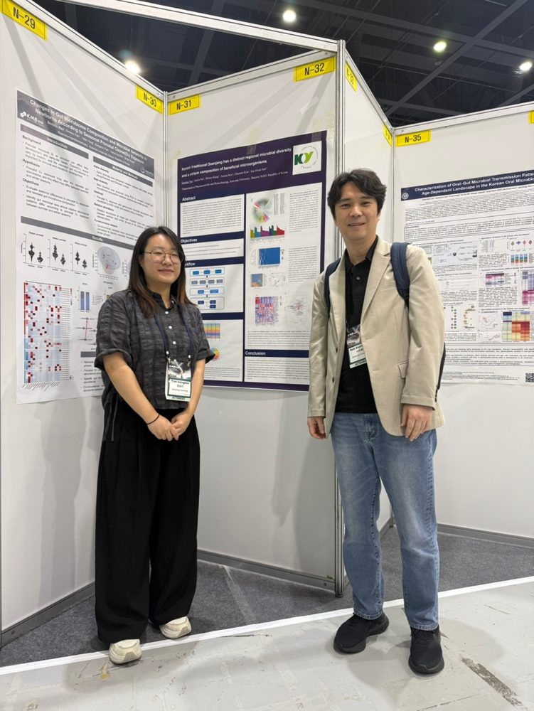
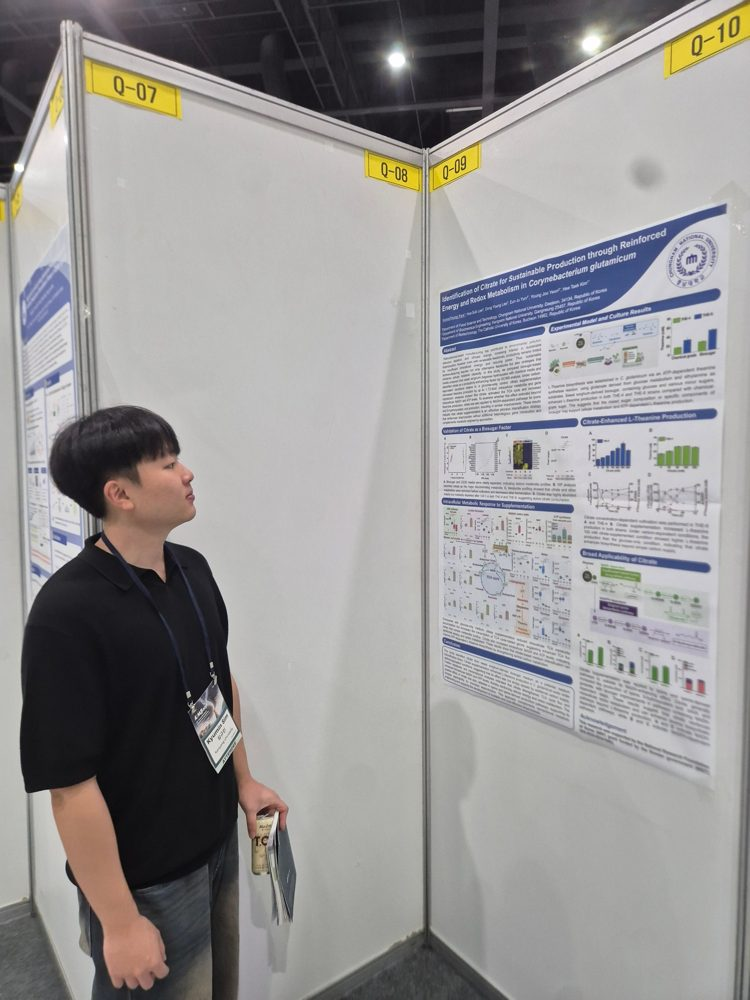
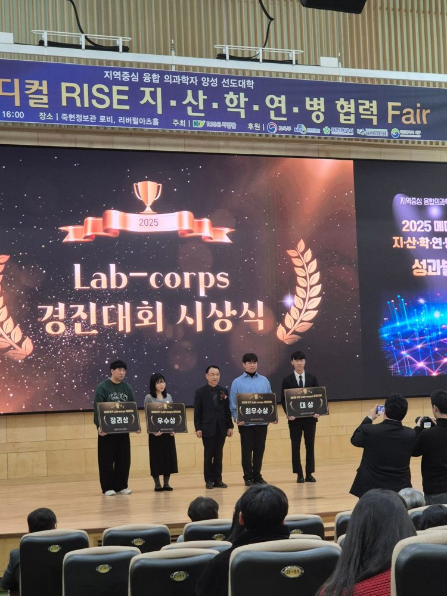
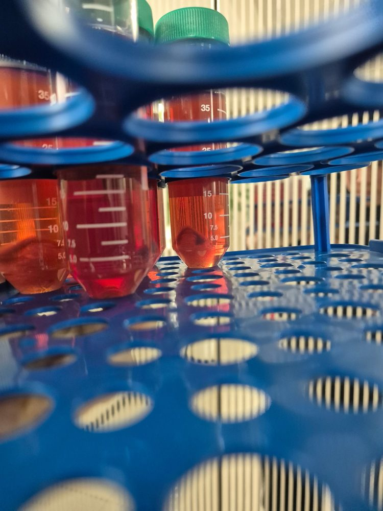
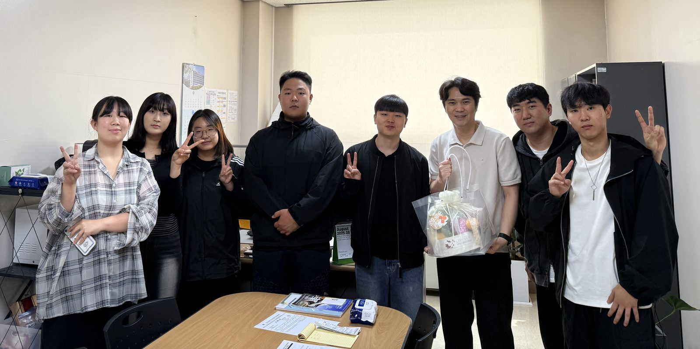

장내 바이러스 분자역학과 환경 감시
노로바이러스, A형간염바이러스, 사포바이러스의 유전형과 집단발생 양상을 분석합니다. 하수·하천과 신선 농산물에서 사람 유래 바이러스 오염을 알려주는 지표(crAssphage)를 평가하고, 하수 기반 감시를 H5N1 같은 인수공통감염병으로 넓히고 있습니다.
norovirus GII.4 · wastewater surveillance · crAssphage · full-length sequencing건양대학교 제약생명공학과 · Department of Pharmaceutical Biotechnology, Konyang University
Enteric Virology Laboratory
노로바이러스를 비롯한 장관바이러스(enteric virus)가 사람, 식품, 환경 사이를 어떻게 옮겨 다니는지 연구합니다. 바이러스를 찾아내는 기술부터 장내 미생물과의 상호작용, 그 위험을 수치로 평가하는 일까지 한 흐름으로 다룹니다.
네 가지 주제를 다루며, 모든 주제는 차세대 염기서열 분석(NGS) 데이터와 생물정보학 분석으로 이어져 있습니다.
노로바이러스, A형간염바이러스, 사포바이러스의 유전형과 집단발생 양상을 분석합니다. 하수·하천과 신선 농산물에서 사람 유래 바이러스 오염을 알려주는 지표(crAssphage)를 평가하고, 하수 기반 감시를 H5N1 같은 인수공통감염병으로 넓히고 있습니다.
norovirus GII.4 · wastewater surveillance · crAssphage · full-length sequencing노로바이러스에 감염되었다가 회복하는 동안 영유아 장내 미생물과 파지가 어떻게 바뀌는지 봅니다. 인체 장 오가노이드(엔테로이드) 모델로 포스트바이오틱스의 항바이러스 기전을 연구하고, 발효식품의 미생물 군집도 분석합니다.
metagenomics · phageome · intestinal enteroid · Akkermansia · fermented foods식품 속 병원체가 사람에게 미치는 위험을 정량적으로 평가하고, 성장 예측모델과 검체 채취 기준을 만듭니다. 바실루스 세레우스, 식용얼음 같은 미생물 기준·규격의 재평가를 수행하며, 식품의약품안전처에서 11년간 쌓은 규제 현장의 경험을 연구에 연결합니다.
QMRA · predictive microbiology · microbiological criteria · sampling plan표적에 결합하는 핵산 압타머를 SELEX로 선별해 바이러스와 세균을 포집·검출합니다. PNA 융해곡선 분석, 멀티플렉스 PCR, NGS 기반 전장 유전체 분석으로 검출과 유전형 분류를 함께 해결합니다.
aptamer · SELEX · qPCR · PNA melting array · NGS미국 노스캐롤라이나주립대에서 노로바이러스 압타머 연구로 시작해, 식품의약품안전처의 식중독 원인조사와 위해성평가, 미국 CDC 바이러스질환과의 노로바이러스 연구를 거쳐 지금의 연구실로 이어졌습니다.

조교수 · 학과장, 건양대학교 제약생명공학과
장관바이러스 연구자입니다. 노스캐롤라이나주립대에서 박사학위를 받은 뒤, 식품의약품안전처 식품의약품안전평가원에서 11년간 보건연구사로 식중독 바이러스와 미생물 위해성평가를 담당했습니다. 이 기간 중 2년간 미국 질병통제예방센터(CDC) 바이러스질환과에서 노로바이러스 분자역학과 장 엔테로이드 감염모델을 연구했습니다. 2024년 건양대학교에 부임했습니다.






석사과정 대학원생을 모집합니다. 바이러스와 미생물을 실험실에서 직접 다뤄 보고, 그 데이터를 분석해 논문으로 완성하는 과정을 함께합니다.
장내 바이러스, 장내 마이크로바이옴, 미생물 위해성평가 분야에서 연구할 석사과정 학생을 찾습니다. 연구에 전념할 수 있도록 다음을 지원합니다.
제약생명공학과 학부생이 함께하는 연구동아리입니다. 장내 미생물과 바이러스를 주제로 실험과 데이터 분석을 경험하며, 연구실 활동으로 이어지는 입구 역할을 합니다. 신입 회원은 매년 2학기 학술제가 끝난 뒤 모집 공고를 냅니다.
석사과정에 관심 있는 학생은 관심 주제와 함께 이메일로 연락 주세요. 학부생 연구 참여는 이메일로 문의해 주세요. 공동연구와 산학협력 문의도 받습니다.